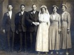
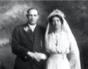

The Kleinsorge Family Tree - Family Card
The Kleinsorge Family Tree - Family Card
KLEINSORGE, Theodor(Jul 7, 1852 - Mar 17, 1932)WESTHUSING, Anthony John(Feb 27, 1846 - Jan 24, 1914)
KLOER, Cathrine Marie(Jun 26, 1867 - Jul 30, 1938)SICKMAN, Catherine Mary(Mar 15, 1853 - Feb 27, 1920)
m. Jan 11, 1916, Germantown, Missouri


b. Jul 19, 1887, Westphalia, Kansas
d. May 26, 1962, Germantown, Missouri
ado.

b. Aug 18, 1891, New York City, New York
d. Jun 5, 1952, Germantown, Missouri
ado. 1893
Children
> KLEINSORGE, Carl Thedore(Jan 22, 1917 - Aug 8, 1989)
KLEINSORGE, Earl William(Mar 29, 1919 - May 7, 1999)
KLEINSORGE, Ruby Ethel(Sep 9, 1920 - Jun 6, 2018)
KLEINSORGE, Inez Anna(Sep 1, 1925 - Jul 28, 1997)
KLEINSORGE, Paul Henry(Jan 26, 1928 - Jan 6, 2014)
KLEINSORGE, Edna Fern(Jun 11, 1933 - Sep 10, 2004)